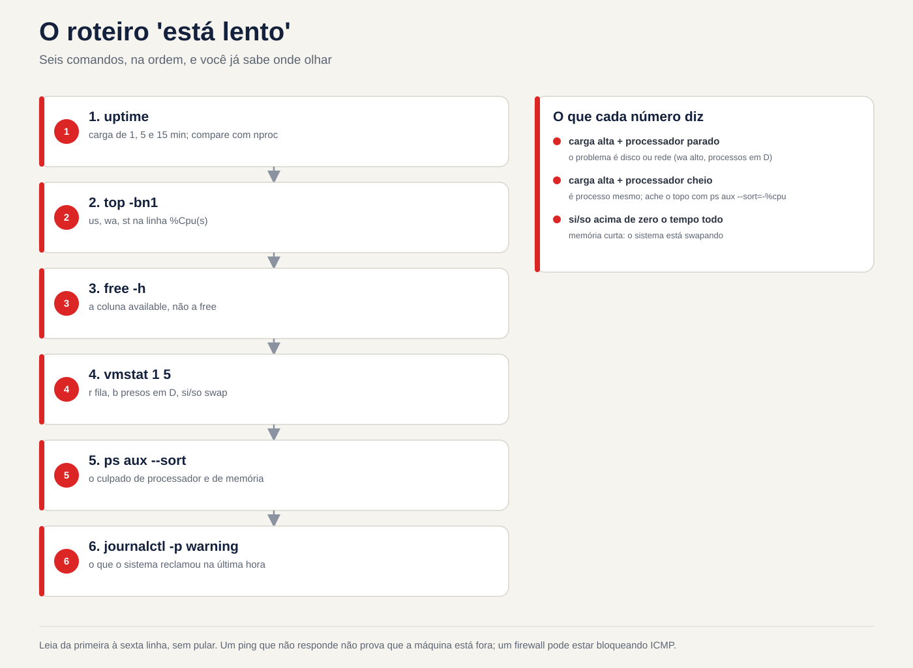

Lezione 2.3 · Processi e log
Terza lezione del Modulo 2. Il telefono squilla: "il server è lento". È la frase più comune a sostegno e la più vaga. Lento perché? Un processore che mangia processi? La memoria è esaurita e il sistema utilizza lo scambio? Un record soffocato che trattiene tutti? Oggi impari come rispondere in cinque minuti, via SSH, senza riavviare nulla: chi è in esecuzione, quanto consuma ciascuno, come chiedere educatamente a un programma di fermarsi e come forzarlo, e dove il sistema ha notato cosa è successo prima del tuo arrivo. Alla fine, sai leggere il diario come qualcuno che legge la cartella clinica di un paziente.
| File | lezione 2.3 |
|---|---|
| Modulo | M2 · Sistema, utenti e permessi, lezione 3 di 8 |
| Quando | Settimana 4 |
| Alla fine puoi | Elencare e filtrare i processi con ps, pgrep e top; leggere le colonne che contano (PID, PPID, %CPU, %MEM, STAT); spiegare cos'è il carico medio; inviare segnali con kill e sapere quando usarli; cambiare priorità con nice e renice; eseguire lavori in background che sopravvivono al logout; trovare nel diario cosa è successo, quando e con chi; rendere permanente la rivista |
| Articoli di prova | LE 014.3 (il sistema in esecuzione: processi, ps, top, free, log, journalctl) · LPIC-1 103.5 (creare, monitorare e terminare processi) · LPIC-1 103.6 (priorità del processo) · RHCSA (identificare e terminare processi ad alto consumo; regolare la priorità; individuare e interpretare i log e il journal; conservare il journal) |
| Prerequisiti | lezione 2.2 (free -h, colonna available; journalctl -k); lezioni 1.5 e 1.6 (grep e tubi) |
| Tempo | Circa 2h |
| Istantanee | m2a3-start e m2a3-end in entrambe le VM |
1 · Riscaldamento
Tre domande, appena mi vengono in mente. Scrivi le risposte; la chiave di risposta viene visualizzata alla fine.
- In Windows, apri Task Manager e fai clic su "Termina attività". Indovina: il programma ha la possibilità di salvare ciò che stava facendo prima di chiudersi o semplicemente scompare?
- Esegui uno script lungo su SSH, la connessione si interrompe. Indovina: lo script continua a essere eseguito sul server o muore insieme?
topmostraload average: 4.00. Indovina: è un bene, un male o dipende da cosa?
2 · Perché è importante
"È lento" e "fermo" sono la metà delle chiamate. La persona che risolve il problema non è quella che conosce più comandi; è qualcuno che ha uno script e lo segue sempre nello stesso ordine: caricamento → processore → memoria → disco → processo colpevole → cosa dice il log. Con questo script arrivi al server, esegui quattro comandi e dici al client cosa sta succedendo, prima che finisca di spiegare.
E c'è la riflessione che fa danno: kill -9. Il programma va in crash, l'amministratore invia -9, il programma scompare. Ma il database non ha avuto il tempo di scrivere ciò che era in memoria, il file di blocco è stato lasciato indietro e il servizio non è più attivo. Conoscere la differenza tra chiedere di uscire e scollegare è ciò che separa la risoluzione dalla creazione della chiamata successiva.
Infine, il registro. Quando il cliente dice "ieri notte è caduto", tu non c'eri. Il diario era. Ma solo se scritto su disco: nella configurazione predefinita di Rocky, il journal resta in memoria e scompare ad ogni avvio. La domanda "cosa è successo prima del riavvio?" muore insieme. Oggi risolverai questo problema in entrambe le VM.
3 · Modello mentale
Ogni processo è un bambino. Ha un numero (PID), un genitore (PPID), un proprietario, uno stato e una casella di posta del segnale. Non esegui un processo; gli mandi una lettera.
systemd (PID 1) ← o avô de todos; adota os órfãos
├─ sshd ← serviço
│ └─ sshd: rodrigo ← a sua conexão
│ └─ bash ← o seu shell
│ ├─ sleep 600 & ← um filho em segundo plano (job)
│ └─ ps -ef --forest ← o comando que você acabou de digitar
├─ chronyd
└─ crondQuattro idee guidano la lezione:
| Idea | Cosa intendi | Conseguenza |
|---|---|---|
| Albero | Ogni processo nasce da un altro (fork); il primo è systemd, PID 1 | Uccidere il padre può portare con sé i figli, oppure lasciarli orfani, adottati dal PID 1 |
| Stato | In corsa (R), addormentato in attesa di qualcosa (S), bloccato in attesa del disco (D), fermo (T), zombie (Z) | Un D non risponde ad alcun segnale, nemmeno a -9: attende il disco |
| Segnale | Un messaggio numerato: 15 chiede di andarsene, 9 uccide, 1 avverte "il terminale non c'è più" | Il processo può gestire 15 e 1; 9 non lo raggiunge mai, il kernel agisce direttamente |
| Registrazione | Tutto ciò che il processo scrive nell'output degli errori e tutto ciò che vedono il kernel e systemd, va nel journal | Se non veniva scritto su disco, scompariva all'avvio |

4 · Concetto a strati
Essenziale
Vedi i processi. Due stili di ps sono sopravvissuti nella pratica; memorizzarne uno per ciascuno:
ps aux # Stile BSD: tutto, con %CPU, %MEM, proprietario
ps -ef # Stile Unix: tutto, con PPID (il genitore)
ps -ef --forest # l'albero
ps -o pid,ppid,user,stat,%cpu,%mem,cmd -p 1234 # solo le colonne che desideri, da un PID| Colonna | Voglio dire |
|---|---|
PID | Il numero del processo; unico mentre vive |
PPID | Numero del padre |
USER | Il proprietario; è con il suo consenso che il processo agisce (lezione 2.7) |
%CPU | Quanto processore ha utilizzato (media da quando ha iniziato, al ps; ora, al top) |
%MEM e RSS | Quanta memoria fisica occupa |
STAT | Lo stato: R, S, D, T, Z, più lettere di dettaglio (s = leader della sessione, + = in primo piano, < = alta priorità, N = bassa priorità) |
TTY | Il terminale; ? significa che non esistono servizi |
Trova un processo per nome. pgrep risponde con il PID; anche pidof; ps con grep funziona, ma lo stesso grep appare nell'elenco:
pgrep -a sshd # PID e riga di comando
pgrep -u rodrigo # tutti i processi utente
pidof chronydIl pannello live: top. Apri e impara cinque tasti: P ordina per processore, M per memoria, 1 mostra ciascun core, k invia un segnale, q esce. Le prime cinque righe sono il riepilogo del server:
top - 14:02:11 up 3 days, 2 users, load average: 0.42, 0.30, 0.25 ← carga de 1, 5 e 15 minutos
Tasks: 128 total, 1 running, 127 sleeping, 0 stopped, 0 zombie
%Cpu(s): 2.0 us, 1.0 sy, 0.0 ni, 96.5 id, 0.5 wa, 0.0 hi, 0.0 si, 0.0 st
MiB Mem : 1967.4 total, 210.3 free, 612.9 used, 1144.2 buff/cache
MiB Swap: 2048.0 total, 2048.0 free, 0.0 used. 1354.5 avail MemNella riga %Cpu(s), tre numeri raccontano la storia: us (programmi funzionanti), wa (processore fermo in attesa del disco) e st (tempo che l'hypervisor ha rubato alla VM per darlo a un altro). id high e wa high contemporaneamente: il problema è il disco, non il processore.
Il carico medio. Il load average è il numero medio di processi che richiedono il processore o sono in attesa del disco (stati R e D). Confrontare con il numero di core (nproc): caricare 4 su una macchina a 4 core è pieno; in un 16, è una pausa; in uno di 1, è una coda. I tre numeri, 1, 5 e 15 minuti, ti dicono dove sta andando: 4.0, 2.0, 0.5 sta peggiorando adesso; 0.5, 2.0, 4.0 sta migliorando.
Segnali. kill non uccide: invia un segnale. Quelli che usi:
| Segnale | Numero | Cosa fa | Quando |
|---|---|---|---|
SIGTERM | 15 | Chiedi di finire; il programma può salvare, chiudere file, eliminare file di blocco | Sempre prima. È lo standard del kill |
SIGKILL | 9 | Il kernel rimuove immediatamente il processo; non lo sa | Solo dopo 15 è fallito e hai aspettato |
SIGHUP | 1 | "Il terminale è spento." Molti servizi lo interpretano come "rileggere la configurazione" | Ricarica un vecchio servizio senza eliminarlo |
SIGINT | 2 | Cosa dice Ctrl+C | Interrompe ciò che è presente sul terminale |
SIGSTOP e SIGCONT | 19 e 18 | Congelare e scongelare; Ctrl+Z manda un cugino di 19 anni, SIGTSTP | Pausa senza uccidere |
kill 1234 # invia 15
kill -9 1234 # invia 9
kill -l # elenca tutti i segni
pkill -u fulano sleep # mandane 15 a tutto il "sonno" di questo ragazzo
killall sleep # mandane 15 a tutti "dormi", tuttiDove sono i log. Due fonti che oggi coesistono:
| Fonte | Cos'è | Come leggere |
|---|---|---|
| systemd Diario | Database binario con tutto: kernel, servizi, login, con data, priorità e unità | journalctl |
File in /var/log | Testo, registrato da rsyslog dal giornale, e da programmi che scrivono direttamente | less, tail -f, grep |
In Rocky, rsyslog è installato e registra /var/log/messages e /var/log/secure (login e sudo). In Debian 13 non arriva: il journal è la fonte e /var/log ha poco altro oltre ai log di apt e dpkg.
Intermediate
journalctl, i filtri che risolvono. Il journal è grande; il valore è nel filtro:
| Domanda | Comando |
|---|---|
| Cos'è successo in questo stivale? | journalctl -b |
| E all'avvio precedente, prima dell'arresto anomalo? | journalctl -b -1 (solo se il giornale è permanente) |
| Che stivali conosce il giornale? | journalctl --list-boots |
| Solo un servizio | journalctl -u sshd (Rocky) o -u ssh (Debian) |
| Solo errori e peggio | journalctl -p err (livelli: emerg, alert, crit, err, warning, notice, info, debug) |
| In una finestra di tempo | journalctl --since '2026-11-02 08:00' --until '09:30'; oppure --since '-1h', --since yesterday |
| Dal vivo | journalctl -f |
| Le ultime righe | journalctl -n 50 |
| Di un programma, per nome | journalctl -t sudo; journalctl _COMM=sshd |
| Da un PID | journalctl _PID=1234 |
Nessuna impaginazione, da utilizzare con grep | journalctl --no-pager |
| Con la spiegazione dell'errore, quando è presente | journalctl -xe |
I filtri si sommano: journalctl -u sshd -p warning --since today sono gli "avvisi SSH di oggi".
Il journal che scompare all'avvio. systemd-journald lo memorizza in /var/log/journal/ se la cartella esiste; In caso contrario, salvatelo in /run/log/journal/, che rimane in memoria e scompare all'avvio. La decisione viene presa mediante l'opzione Storage= nel /etc/systemd/journald.conf:
Storage= | Comportamento |
|---|---|
auto (predefinito) | Scrive su disco se esiste /var/log/journal/; altrimenti solo in memoria |
persistent | Creare la cartella e salvarla sul disco |
volatile | Solo in memoria |
In Rocky 9, la cartella non esiste dopo l'installazione: il journal è volatile e rsyslog è quello che memorizza la cronologia in /var/log/messages. In Debian 13, la cartella viene creata al momento dell'installazione e il journal è già permanente. Li controllerai entrambi in laboratorio, perché "lo standard" cambia da una versione all'altra e ciò che conta è ciò che c'è sulla macchina.
Priorità: nice e renice. Il bello va da -20 (più priorità) a 19 (meno). L'impostazione predefinita è 0. Un processo "bello" (high nice) cede il processore ad altri:
nice -n 10 tar czf /tmp/backup.tgz /etc # inizia ora con un bel 10
renice -n 15 -p 1234 # cambiarne uno già in esecuzione
ps -o pid,ni,cmd -p 1234 # controlloL'utente ordinario può solo aumentare l'aspetto gradevole dei propri processi (diventare più gradevoli). Diminuire o modificare quelli degli altri richiede root. In top, la colonna NI mostra il valore e PR mostra la priorità calcolata dal kernel da esso.
Primo piano e sfondo. Nella shell, un comando con & alla fine viene eseguito in background, come un job:
| Comando | Che cosa significa |
|---|---|
comando & | Funziona in background; la shell mostra [1] 4321 (numero lavoro e PID) |
Ctrl+Z | Metti in pausa ciò che è in primo piano |
jobs -l | Elenca i lavori per questa shell |
bg %1 | Il lavoro 1 continua in background |
fg %1 | Porta il lavoro 1 in primo piano |
kill %1 | Invia 15 al lavoro 1 |
I lavori provengono dalla shell: se la shell muore, invia SIGHUP ai suoi figli, e muoiono insieme. Per sopravvivere al logout:
| Modo | Come | Quando |
|---|---|---|
nohup comando & | Ignorare SIGHUP; l'uscita va a nohup.out | Un comando separato, veloce da ricordare; fai il test |
tmux (o screen) | Una sessione terminale che continua sul server; si esce e si ritorna con tmux attach | Nel modo quotidiano: aggiornamento lungo, copia grande |
systemd-run --user o un'unità di servizio | systemd si occupa del processo | Cose che devono essere sempre eseguite (Modulo 4) |
Windows Bridge
| Su Windows | Su Linux | Cosa cambia |
|---|---|---|
| Task Manager, scheda Processi | top, ps aux | top funziona su SSH e mostra il carico medio, cosa che Windows non |
| "Termina compito" | kill PID (15) | Linux chiede prima; il programma può dire addio |
| "Finalizza albero dei processi" | kill -9 o pkill -P PPID per i bambini | |
| Priorità: "Sotto la norma" | renice -n 10 | La scala è invertita: numero più alto, priorità più bassa |
| Visualizzatore eventi | journalctl | Filtri sulla riga di comando invece di fare clic su |
| Registri di applicazione, sistema, sicurezza | journalctl -u serviço, journalctl -k, /var/log/secure o journalctl -t sudo | |
| Attività che continua dopo la disconnessione | tmux, nohup o un servizio |
Avanzato
/proc/PID/, il processo interno. Ogni processo ha una cartella: /proc/1234/cmdline (la riga di comando), /proc/1234/status (stato, memoria, proprietario), /proc/1234/fd/ (i file aperti, come i collegamenti), /proc/1234/cwd (la cartella in cui si trova). ps e top si leggono da lì. Quando un disco è pieno e non riesci a trovare il file, ls -l /proc/*/fd 2>/dev/null | grep deleted mostra il file cancellato che un processo tiene ancora aperto: lo spazio ritorna solo alla chiusura del processo.
Zombie e orfano. Un processo terminato si trova nella tabella come Z finché il suo genitore non legge il suo codice di uscita. Uno zombie non spreca processore o memoria, ma solo una riga nella tabella; Non ha senso mandargli il kill perché è già morto. È il padre che decide: o lo legge, oppure muore, e poi systemd lo adotta e lo ripulisce. Un orfano è l'opposto: il genitore è morto e il bambino è ancora vivo, adottato dal PID 1.
Lo stato D. Un processo in D (sonno ininterrotto) è all'interno del kernel in attesa del disco o della rete (un NFS che si è bloccato, ad esempio). Nessun segnale ti farà uscire da lì, nemmeno 9. Se ne vedi diversi in D e il carico è elevato con il processore fermo, il problema è nella memoria. Il riavvio del server potrebbe addirittura causarne il blocco allo spegnimento.
systemd-cgls e systemd-cgtop. Systemd raggruppa i processi di ciascun servizio in un cgroup. systemd-cgls rappresenta l'albero per servizio; systemd-cgtop mostra il consumo per servizio, non per processo. Su un server con un servizio che apre un centinaio di processi si vede di chi è la colpa.
sudo journalctl × gruppi. Senza sudo, journalctl mostra solo i messaggi propri dell'utente. I membri del gruppo wheel (Rocky), adm (Debian) o systemd-journal (entrambi) leggono tutto senza sudo.
Cosa rientra nel test
- LE 014.3: cos'è un processo,
ps,top,free, dove sono i log,journalctlbasic. - LPIC-1 103.5:
ps,pgrep,pkill,kill,killall,top,free,uptime,watch,nohup,jobs,bg,fg,&,screenetmux; i segnali, per nome e numero. - LPIC-1 103.6:
nice,renice, l'intervallo da-20a19, chi può scaricare nice, le colonneNIePR. - RHCSA: trova e termina il processo che consuma di più; regolare la priorità;
journalctlcon filtri unitari, prioritari e temporali; rendere permanente il diario.
5 · Rocky × Debian
| Cosa | Roccioso 9 | Debian 13 |
|---|---|---|
| Journal su disco dopo l'installazione | No: /var/log/journal/ non esiste, giornale volatile | Sì: la cartella esiste e il diario è permanente |
rsyslog | Installato e attivo; registra /var/log/messages e /var/log/secure | Non viene installato; la fonte è la rivista |
Registro di accesso e sudo nel testo | /var/log/secure | Non ce n'è; utilizzare journalctl -t sudo e journalctl -u ssh |
| Nome unità SSH | sshd | ssh |
Chiunque legga l'intero giornale senza sudo | Gruppi wheel e systemd-journal | Gruppi adm e systemd-journal |
tmux | dnf install tmux | apt install tmux |
pstree | Pacchetto psmisc, generalmente installato | Pacchetto psmisc, potrebbe mancare |
killall | Pacchetto psmisc | Pacchetto psmisc |
6 · Laboratorio guidato
Fare tutto prima in rocky-lab e ripetere in debian-lab. Dove Debian cambia, il passo avverte. Aprire due terminali SSH sulla stessa VM: terminale 1 per creare i processi, terminale 2 per osservare.


Passaggio 0 · Istantanea
In Proxmox, acquisire l'istantanea m2a3-inicio delle due VM. Se qualcosa va storto seriamente, torna qui.
Passo 1 · Il tuo albero
Nel terminale 1:
echo $$ # il PID della tua shell
ps -o pid,ppid,user,stat,cmd -p $$
ps -ef --forest | grep -B3 -A1 "$$"Segui PPID verso l'alto: il tuo bash è figlio di un sshd: rodrigo, che è figlio di un altro sshd, che è figlio di systemd, PID 1. Ora controlla il nonno:
ps -o pid,user,cmd -p 1
nproc # quanti core ha la VM
uptime # Da quanto tempo è acceso e la carica?Nota nproc. Ti servirà per leggere il payload tra poco.
Passo 2 · Primo piano e sfondo
Sempre sul terminale 1:
sleep 600 & # [1] e un PID
sleep 700 # Questo contiene il terminaleIl secondo sleep ha intrappolato il terminale. Premere Ctrl+Z. La shell risponde [2]+ Stopped. Adesso:
jobs -l # 1 in corsa, 2 fermi
ps -o pid,stat,cmd -C sleep # l'arresto appare con STAT T
bg %2 # 2 riprende a funzionare in background
jobs -l
fg %1 # porta 1 in primo pianoIl terminale è di nuovo bloccato, ora su sleep 600. Premere Ctrl+C: riceve SIGINT e termina. Pulisci l'altro:
kill %2
jobs -l # vuotoDecidi 1 · Il terminale si è bloccato. Hai eseguito una copia tramite SSH che richiederà un'ora, senza &. Il terminale è bloccato e ne hai bisogno. Cosa fare senza perdere la copia?
- A)
Ctrl+Ce ripetere con&alla fine. - B)
Ctrl+Ze poibg. - C) Aprire un altro terminale e inviare
kill -STOPnella copia. - D) Chiudere la finestra SSH; la copia continua da sola.
Scegliere la lettera prima di guardare la tabella.
| Se hai selezionato | Risultato | Perché |
|---|---|---|
| A | ❌ Sbagliato | Ctrl+C interrompe la copia e si ricomincia da capo. |
| B | ✅ Giusto | Ctrl+Z mette in pausa e ritorna al terminale; bg fa sì che la copia continui in background, dove si trovava. |
| C | ❌ Sbagliato | SIGSTOP blocca la copia, ma il terminale 1 rimane bloccato in attesa. Hai appena cambiato il problema. |
| D | ❌ Sbagliato | Quando la connessione si interrompe, la shell riceve SIGHUP e lo trasmette ai suoi figli. La copia muore. Il passaggio 5 lo mostra dal vivo. |
Da correggere: Ctrl+Z, bg. E, se deve sopravvivere al logout, non è ancora abbastanza: vedi Passo 5.
Passo 3 · Fai rumore e trova il colpevole
Nel terminale 1, crea un processo che mangia un intero core:
yes > /dev/null &Nel terminale 2, apri top. Premere P (ordina per processore). yes sale al massimo, vicino al 100%. Premere 1 per vedere i nuclei separati: uno di essi è pieno. Riga di avviso %Cpu(s): us è aumentato. Aspetta un attimo e guarda il caricamento: il primo numero va a 1.
Esci con q e controlla la stessa cosa senza il pannello, come lo incolli in un ticket:
uptime
ps aux --sort=-%cpu | head -5
top -bn1 | head -12 # un ritratto della cima, nel testoOra abbassa la sua priorità. Sul terminale 2, come utente:
PID=$(pgrep -x yes)
ps -o pid,ni,pri,cmd -p $PID # NI 0
renice -n 10 -p $PID
ps -o pid,ni,pri,cmd -p $PID # NI 10
renice -n 0 -p $PID # prova a tornare indietroL'ultimo renice fallisce con Permission denied. Sei riuscito a diventare più carino, ma non puoi tornare indietro senza essere root.
Decidi 2 · Chi può cosa. Un utente normale esegue un processo con nice 10. Quale di queste cose può fare da solo?
- A)
renice -n 5(torna a 5) - B)
renice -n 15 - C)
renice -n -5 - D)
renice -n 15nel processo di un altro utente
Scegli la lettera prima di guardare la tabella.
| Se hai selezionato | Risultato | Perché |
|---|---|---|
| A | ❌ Sbagliato | Abbassare il bello significa chiedere maggiore priorità. L'utente ordinario sale e basta. |
| B | ✅ Giusto | Aumentare la bellezza del processo stesso è sempre consentito: è cedere il passo ad altri. |
| C | ❌ Sbagliato | Il bel negativo è la priorità sopra il normale, solo root. |
| D | ❌ Sbagliato | Processo da un altro utente, solo root, anche solo per renderlo più delicato. |
Da risolvere: più bello, priorità più bassa. L'utente normale sale solo e solo di propria iniziativa.
Termina yes educatamente e controlla:
kill $PID
pgrep -x yes; echo "rc=$?" # rc=1: non ne è rimasto nessunoPasso 4 · Chiedi di uscire e scollegare
Crea un falso "servizio" che si comporti come uno reale: scrive un file di blocco quando sale, si rifiuta di salire se il blocco esiste e cancella il blocco quando riceve SIGTERM.
cat > ~/lab-servico.sh <<'EOF'
#!/bin/bash
TRAVA=/tmp/lab-servico.lock
if [ -e "$TRAVA" ]; then
echo "ERRO: já está rodando (PID $(cat "$TRAVA")). Saindo." >&2
logger -t lab-servico "recusei subir: trava $TRAVA existe"
exit 1
fi
echo $$ > "$TRAVA"
trap 'logger -t lab-servico "TERM recebido, trava removida"; rm -f "$TRAVA"; exit 0' TERM
logger -t lab-servico "iniciado, PID $$"
while true; do sleep 2; done
EOF
chmod +x ~/lab-servico.shNel terminale 1:
~/lab-servico.sh &
cat /tmp/lab-servico.lock # il suo PIDNel terminale 2, seguire ciò che dice:
journalctl -t lab-servico -fNel terminale 1, inviare SIGTERM:
kill $(cat /tmp/lab-servico.lock)
ls /tmp/lab-servico.lock # Nessun file del genereIl terminale 2 ha mostrato TERM recebido, trava removida, circa due secondi dopo kill. Questo ritardo è dovuto al fatto che il programma termina ciò che stava facendo (sleep 2) prima di elaborare il segnale. È ciò che fa un database per registrare ciò che era in memoria. Lasciare aperto il terminale 2; usi di nuovo il lucchetto nella pausa B.
Decidi 3 · I secondi di attesa. Invii kill a un servizio e non scompare subito. Cosa fa?
- A) Invia
kill -9immediatamente: si è fermato. - B) Attendi qualche secondo e verifica con
ps -p PID; solo se rimane in vita dopo un tempo ragionevole,kill -9. - C) Riavvia il server.
- D) Invia
kill -1, che è più forte di 15.
Scegli la lettera prima di guardare la tabella.
| Se hai selezionato | Risultato | Perché |
|---|---|---|
| A | ❌ Sbagliato | Il programma dice addio: registra, chiude, cancella la serratura. -9 lo ferma a metà e lascia lo sporco. |
| B | ✅ Giusto | 15 è una richiesta. Dategli tempo. systemctl stop fa esattamente questo: invia 15, attende 90 secondi per impostazione predefinita e solo dopo invia 9. |
| C | ❌ Sbagliato | Restart invia i 15 a tutti, compreso lui, e porta via il resto. |
| D | ❌ Sbagliato | 1 non è "più forte"; è un altro messaggio ("il terminale non c'è più" o "rileggere la configurazione"). Molti servizi non finiscono nemmeno con questo. |
Da risolvere: 15, attendere, controllare; solo allora 9. Questo è ciò che fa lo stesso systemd.
Passo 5 · Sopravvivere alla connessione drop
Ora il test che risponde alla domanda 2 del riscaldamento. Sul terminale 1:
sleep 901 & # un lavoro comune
nohup sleep 902 > /dev/null 2>&1 & # un lavoro immune da SIGHUP
pgrep -a sleep
kill -HUP $$ # simula la caduta: il tuo guscio riceve il SIGHUPLa connessione del terminale 1 si chiude, come se la rete fosse interrotta. Nel terminale 2:
pgrep -a sleepSolo sleep 902 è sopravvissuto. Quando la shell riceve SIGHUP, lo passa a ciascun lavoro e sleep 901 è morto. nohup ha fatto sì che 902 ignorasse questo segnale, ed è stato adottato da systemd: controlla suo padre.
ps -o pid,ppid,cmd -p $(pgrep -f 'sleep 902')PPID non è più la tua shell, che è morta: è systemd --user o PID 1. Un dettaglio fuorviante: se inizi a digitare exit, Bash, per impostazione predefinita, non invia SIGHUP ai lavori, e sleep 901 sopravvivrebbe. Ciò che uccide è la caduta, non il exit. Ecco perché nel test è stata utilizzata la caduta.
Ora nel modo quotidiano. Installa tmux (sudo dnf install -y tmux su Rocky, sudo apt install -y tmux su Debian), ricollega il terminale 1 e:
tmux new -s lab
sleep 903 # all'interno di tmux, in primo pianoPremi Ctrl+B e poi D (da stacca). Esci da tmux e sleep 903 rimane dentro. Simula di nuovo la caduta con kill -HUP $$, riconnettiti e:
tmux ls # la sessione "laboratorio" continua
tmux attach -t lab # rientri dentro, col sonno ancora in corsoPremi Ctrl+C per finire sleep, esci da tmux con exit e cancella l'altro: pkill -f 'sleep 902'.
Passo 6 · Leggi il diario
Registra un tuo messaggio e ritrovalo:
logger -t lab-aula23 "teste de leitura do journal"
journalctl -t lab-aula23Se qualche journalctl di questa lezione risulta vuoto o ti avverte che non vedi altri messaggi delle persone, il tuo utente non è in un gruppo che legge l'intero diario (vedi Avanzate). Ripeti con sudo e scrivi nell'agenda in quale gruppo si trova rodrigo: id rodrigo.
Ora i filtri che utilizzerai ogni settimana. Eseguilo uno per uno e leggi l'output:
journalctl -b -n 20 # la fine di questo avvio
journalctl -u sshd --since today # su Debian: -u ssh
journalctl -p err -b # solo errori e peggio, su questo avvio
journalctl -t sudo --since '-1h' # chi ha usato sudo nell'ultima ora
journalctl --since '-10min' -o short-precise # con millisecondi
journalctl -t lab-servico -o verbose -n 1 # tutti i campi su una rigaL'ultimo mostra che ogni riga del giornale è un record con i campi: _PID, _UID, _COMM, _SYSTEMD_UNIT, _BOOT_ID. È attraverso questi campi che filtrano -u, -t e _PID=.
In Rocky, confrontare con il file di testo:
sudo tail -5 /var/log/messages
sudo grep lab-aula23 /var/log/messages
sudo tail -5 /var/log/secure # accessi e sudoIn Debian i due file non esistono: confermare con ls /var/log/messages /var/log/secure.
Passo 7 · Il journal sopravvive all'avvio?
ls -ld /var/log/journal /run/log/journal 2>&1
journalctl --list-boots
journalctl --disk-usageSe /var/log/journal non esiste e --list-boots mostra una sola riga, anche con la VM riavviata prima, il journal è volatile. Il risultato atteso è volatile in Rocky e permanente in Debian, ma ciò che conta è ciò che ha mostrato la tua macchina.
Decidi 4 · Rendi permanente. In Rocky, vuoi che il diario sopravviva all'avvio, in modo che un aggiornamento al pacchetto systemd non lo annulli. Cosa fa?
- A) Modifica
/usr/lib/systemd/journald.confe inserisciStorage=persistent. - B) Crea
/etc/systemd/journald.conf.d/50-lab.confcon[Journal]eStorage=persistente riavviasystemd-journald. - C)
sudo cp -r /run/log/journal /var/log/. - D) Installa
rsyslog: ha già salvato tutto.
Scegli la lettera prima di guardare il tabella.
| Se hai selezionato | Risultato | Perché |
|---|---|---|
| A | ❌ Sbagliato | I file in /usr/lib appartengono al pacchetto; il prossimo aggiornamento potrebbe sovrascriverlo. La regola è la stessa della lezione 2.2 con udev: l'amministratore scrive in /etc. |
| B | ✅ Giusto | Un file in /etc/systemd/journald.conf.d/ è tuo, sopravvive agli aggiornamenti e mostra la modifica in un unico posto. Anche la modifica diretta di /etc/systemd/journald.conf funziona e appare anche nel test. |
| C | ❌ Sbagliato | Hai copiato ciò che già esisteva, ma journald continua a scrivere in memoria. Al successivo avvio, sul disco non è andato nulla di nuovo. |
| D | ❌ Sbagliato | rsyslog è già installato in Rocky e salva il testo. Ma journalctl -b -1, con i filtri per unità e priorità, resta vuoto. |
Per risolvere: Storage=persistent in un file /etc/systemd/journald.conf.d/, riavvia journald, verifica con --list-boots dopo l'avvio.
Fallo su entrambe le VM, anche se Debian è già permanente: in questo modo è esplicito e un cambio di standard in futuro non cambierà il tuo server.
sudo mkdir -p /etc/systemd/journald.conf.d
printf '[Journal]\nStorage=persistent\n' | sudo tee /etc/systemd/journald.conf.d/50-lab.conf
sudo systemctl restart systemd-journald
ls -ld /var/log/journal
journalctl --disk-usageLa cartella /var/log/journal ora esiste. Riavvia la VM (sudo systemctl reboot), riconnettiti e:
journalctl --list-boots # ora due righe o più
journalctl -b -1 -n 5 # la fine del boot precedente: lo shutdownHai appena letto cosa è successo prima di riavviare. Questo è ciò che il cliente vuole sapere quando dice "la notte scorsa è caduto".
Passo 8 · Lo script "è lento"
Assembla tutto in uno script di cinque comandi ed eseguilo in ordine. Non c'è niente di sbagliato nelle VM adesso; L'obiettivo è sapere cosa è normale in loro, per riconoscere in seguito ciò che è anormale.
uptime # 1. il carico, rispetto a nproc
top -bn1 | head -5 # 2. us, wa, st nella riga %Cpu
free -h # 3. la colonna disponibile
vmstat 1 5 # 4. r (coda), b (bloccato in D), si/so (scambio), wa
ps aux --sort=-%cpu | head -5 # 5. il colpevole del processore
ps aux --sort=-%mem | head -5 # e memoria
journalctl -p warning --since '-1h' --no-pager | tail -20 # 6. cosa ha lamentato il sistemaIn vmstat, la prima riga è la media dall'avvio; leggere dal secondo in poi. Le colonne che contano: r (processi che richiedono processore), b (bloccato in D), si e so (memoria che va avanti e indietro dallo swap: sempre sopra lo zero è segno di memoria corta) e wa.
Copia l'output dei sei comandi delle due VM nell'agenda, con la data. È la tua linea di base.
7 · Interrompi e correggi
Interruzione A · Il disco pieno che nessuno trova
La chiamata: "il disco è pieno, ma abbiamo eliminato il file di grandi dimensioni e non è stato liberato nulla". Gioca in Rocky-Lab. Nel terminale 1:
df -h /var/tmp
dd if=/dev/zero of=/var/tmp/lab-grande.log bs=1M count=200
sleep 3600 < /var/tmp/lab-grande.log & # un processo che mantiene il file aperto
rm /var/tmp/lab-grande.logNota.
df -h /var/tmp # i 200 MB sono ancora occupati
sudo du -sh /var/tmp # ma la cartella non ha quasi nulla
ls -l /var/tmp/lab-grande.log # Nessun file del generedf dice che il posto è occupato; du non trova chi lo occupa. Hanno ragione entrambi.
Diagnostique. Su Linux, rm non cancella il contenuto; eliminare il nome. Il contenuto viene liberato solo quando nessun nome lo indica e nessun processo lo tiene aperto. du aggiunge i nomi trovati; df chiede al file system quanto è occupato. Chi detiene il fascicolo? La cartella /proc/PID/fd/ di ciascun processo mostra i file aperti e il kernel contrassegna quelli eliminati con (deleted):
sudo find /proc/[0-9]*/fd -lname '*(deleted)' -printf '%p -> %l\n' 2>/dev/null | grep -v memfdUna linea punta a /var/tmp/lab-grande.log (deleted) e il numero al centro è il PID di sleep. Se è installato lsof, appare sudo lsof +L1 con il nome del programma. Nel mondo reale, questo processo è un servizio che scrive in un registro che qualcuno ha cancellato manualmente, invece di utilizzare logrotate.
Decidi A · La correzione. Cosa libera spazio?
- A) Termina o riavvia il processo che contiene il file.
- B) Riavvia il server.
- C) Esegui
rm -f /var/tmp/lab-grande.logda nuovo, con-f. - D) Eseguire
fscksul file system.
Scegliere la lettera prima di guardare la tabella.
| Se hai selezionato | Risultato | Perché |
|---|---|---|
| A | ✅ Giusto | Quando il processo chiude il file, il kernel vede che non è rimasto alcun nome o lettore e libera immediatamente i blocchi. In un vero servizio, systemctl restart su di esso. |
| B | ⚠️ Funziona, ma | Lo spazio ritorna, perché tutti i processi si chiudono. Ma hai disattivato l'intero server per risolvere un processo. |
| C | ❌ Sbagliato | Non c'è più un nome da cancellare. rm risponde che il file non esiste, con o senza -f. |
| D | ❌ Sbagliato | Non c'è nessun errore nel file system: sta facendo esattamente quello che dovrebbe. E fsck in un sistema montato è pericoloso. |
Da risolvere: df pieno e du vuoto = file eliminato e ancora aperto. /proc/*/fd o lsof +L1 mostrano chi lo detiene.
Riparalo.
kill %1 # o il PID trovato mostrato
df -h /var/tmp # i 200 MB sono tornatiQuando il processo non può essere riavviato (un database nel bel mezzo della giornata lavorativa, ad esempio), esiste un trucco di emergenza: svuotare il file lungo il percorso in /proc, con sudo truncate -s 0 /proc/PID/fd/N. Il processo continua con il file aperto, ma ora vuoto. Utilizzare con cautela e solo nei log: in un file di dati, hai appena cancellato i dati.
Break B · Il servizio che non si riavvia dopo il kill -9
La chiamata: "il servizio è andato in crash, l'ho killato e ora non si riavvia più". Utilizzare lab-servico.sh dal passaggio 4. Nel terminale 2, lasciare il journal aperto:
journalctl -t lab-servico -fNel terminale 1, caricare il servizio e terminare nel modo sbagliato:
~/lab-servico.sh &
kill -9 $(cat /tmp/lab-servico.lock)
~/lab-servico.sh &Nota.
jobs -l
cat /tmp/lab-servico.lockIl secondo avvio non è riuscito con ERRO: já está rodando. Il diario mostra iniciado e poi recusei subir, ma niente TERM recebido: il programma non ha mai saputo che sarebbe morto.
Diagnose. SIGKILL non viene consegnato al programma: il kernel lo rimuove direttamente. Il trap che ha cancellato il lock non è mai stato eseguito e il lock aveva il PID di un processo morto. Confermare che nessuno abbia questo PID:
PIDVELHO=$(cat /tmp/lab-servico.lock)
ps -p "$PIDVELHO" -o pid,cmd; echo "rc=$?" # rc=1: non esiste
pgrep -af lab-servico; echo "rc=$?" # nessun servizio di laboratorio in funzioneÈ la stessa cosa che succede con dnf ("in attesa del blocco"), con un PostgreSQL che lascia postmaster.pid, con qualsiasi servizio che utilizza un file PID.
Decidi B · La correzione. Cosa fai?
- A) Controlla che il PID del blocco non esista più, elimina il blocco e riavvia il servizio.
- B) Invia nuovamente
kill -9nel PID della serratura. - C) Cancella direttamente la serratura, senza controllare nulla, e vai su.
- D) Riavvia il server per cancellare
/tmp.
Scegli la lettera prima di guardare la tabella.
| Se hai selezionato | Risultato | Perché |
|---|---|---|
| A | ✅ Giusto | Il blocco è lì per impedire due copie. Hai dimostrato che non esiste alcuna copia; ora è spazzatura e può andarsene. |
| B | ❌ Sbagliato | Non esiste alcun processo con quel numero. kill risponde a No such process. Peggio ancora: se il numero è già stato riutilizzato da un altro processo, hai appena ucciso una persona innocente. |
| C | ⚠️ Funziona, ma | Oggi funziona. Il giorno in cui il servizio è effettivamente in esecuzione e "semplicemente lento", carichi una seconda copia sopra la prima ed entrambi scrivono sugli stessi dati. |
| D | ❌ Sbagliato | Rilascia tutto per eliminare un file. E non sempre risolve: in Debian 13 /tmp viene pulito all'avvio, in Rocky rimane sul disco e il lock sopravvive. |
Per risolvere: dopo un kill -9, cercare lo sporco: lock, PID, file temporaneo. Verificare che il proprietario sia morto prima della pulizia.
Ripararlo.
ps -p "$(cat /tmp/lab-servico.lock)" > /dev/null || rm -f /tmp/lab-servico.lock
~/lab-servico.sh &
kill %1 # ora nel modo giusto
ls /tmp/lab-servico.lock # Nessun file del genere: il lucchetto è uscito con essoIl diario, nel terminale 2, mostra iniciado e TERM recebido, trava removida. Il ciclo si è chiuso in modo pulito.
La lezione
Le due interruzioni rappresentano lo stesso tipo di problema: l'effetto continua dopo che la causa è scomparsa dalla vista. Il file eliminato continuava a occupare il disco perché era trattenuto da un processo. La serratura continuava a bloccarsi perché il processo che avrebbe dovuto spegnerla è stato strappato dalla presa. Nei processi, quello che vedi in ls non è lo stato completo: il resto è in /proc, nel journal e nei file che i programmi lasciano. L'abitudine di questa lezione: prima di uccidere, chiedere cosa prevede il processo; dopo aver ucciso, controlla cosa ha lasciato.
8 · Trappole
| Digiti o vedi | Cosa succede | Quello giusto |
|---|---|---|
kill -9 come primo tentativo | Il programma non registra, non chiude, non toglie il lucchetto | kill PID, attendere, verificare; -9 solo alla fine |
kill in un processo nello stato D | Niente: nemmeno il 9 lo tira fuori di lì | Esaminare il disco o la rete prevista (dmesg, journalctl -k) |
kill in uno zombie (Z) | Niente: è già morto | Tratta il genitore: riavvia il servizio che lo ha creato |
ps aux | grep nginx | grep stesso compare nell'elenco | pgrep -a nginx, oppure ps aux | grep [n]ginx |
killall senza pensare | Uccide tutti i processi con quel nome, da tutti gli utenti (come root) | pkill -u usuario nome, oppure il PID |
load average: 4.00 e la conclusione "è sovraccarico" | Dipende dai nuclei | Confronta con nproc |
Carico elevato e %Cpu quasi fermo | Non è un processore: è un disco o una rete (wa alto, processi a D) | vmstat 1, colonna b; top, riga wa |
comando & e chiudere SSH | Il lavoro muore con la caduta | nohup, tmux o un servizio |
renice -n -5 come utente abituale | Permission denied | Solo root scarica bene |
journalctl -b -1 dà Specified boot ID not found | Il diario è volatile: l'avvio precedente non è stato salvato | Storage=persistent |
Modifica /usr/lib/systemd/journald.conf | L'aggiornamento sovrascrive | /etc/systemd/journald.conf.d/*.conf |
journalctl senza filtro | Migliaia di righe, ti arrendi | -u, -p, --since, -t, -b |
rm nel log gigante di un servizio in esecuzione | Lo spazio non ritorna | Riavviare il servizio, oppure truncate -s 0 nel file prima di eliminare |
journalctl -u sshd su Debian | Vuoto | In Debian l'unità è ssh |
9 · Quiz
Dieci domande, senza consultazione. Scrivere la lettera o rispondere a ciascuna e solo dopo aprire la chiave di risposta.
1. Che segnale invia kill quando non si dice nulla?
- A)
SIGKILL(9) - B)
SIGHUP(1) - C)
SIGTERM(15) - D)
SIGINT(2)
2. Una VM con 2 core mostra load average: 6.10, 3.20, 1.05. Cosa ne pensi del carico, attuale e nel trend?
3. Quale comando mostra solo gli errori e i peggiori dell'avvio corrente?
- A)
journalctl -b -p err - B)
journalctl --errors - C)
journalctl -b -1 - D)
journalctl -k
4. df mostra il disco Pieno al 100%, ma du alla radice equivale a molto meno. Qual è la causa più probabile e con quale comando confermi?
5. Quale intervallo di valori accetta nice e quale dà maggiore priorità?
- A) Da 0 a 99; 99 ha più priorità
- B) Da -20 a 19; -20 è più prioritario
- C) Da -20 a 19; 19 ha più priorità
- D) da 1 a 10; 10 è più prioritario
6. Esegui tar tramite SSH, la connessione si interrompe e tar muore. Nomina due modi per eseguirlo di nuovo in modo che sopravviva al prossimo arresto anomalo.
7. In un ps aux, appare un processo con STAT uguale a Z. Che cos'è e perché kill -9 non serve?
8. Dove inserire la configurazione per rendere permanente il giornale, in modo che l'aggiornamento del pacchetto non lo annulli?
- A)
/usr/lib/systemd/journald.conf - B)
/etc/systemd/journald.conf.d/50-meu.conf - C)
/var/log/journal/journald.conf - D)
/run/systemd/journald.conf
9. Scrivere un comando che mostri i messaggi dal servizio sshd dalle 8 di oggi.
10. Un processo è nello stato D e ignora kill -9. Cosa significa lo stato D?
- A) Il processo è un demone ed è protetto dai segnali
- B) Il processo è stato interrotto da
SIGSTOP - C) Il processo è in modalità di sospensione continua, in attesa di I/O all'interno del kernel
- D) Il processo è morto e attende che il suo genitore raccolga l'uscita status
10 · Flashcard e colla
Per conoscerlo a memoria
- La sceneggiatura "è lenta":
uptime→top(us, wa, st) →free -h→vmstat 1 5→ps aux --sort=-%cpu→journalctl -p warning. - Il carico medio è paragonato a
nproc. Il carico elevato con il processore arrestato è il disco. killinvia 15. Attendere, controllare e solo allora 9.- Nice passa da
-20(più priorità) a19(meno). Gli utenti ordinari salgono solo e solo nel proprio. - Job muore quando la connessione si interrompe;
nohupetmuxsopravvivono. - Giornale permanente:
Storage=persistentin/etc/systemd/journald.conf.d/, riavviare il giornaled, verificare con--list-boots. dfpieno eduvuoto: file cancellato e ancora aperto.
Per consultare
| Domanda | Comando |
|---|---|
| Tutti i processi, con proprietario e consumo | ps aux |
| Con suo padre, su un albero | ps -ef --forest; pstree -p |
| Colonne scelte | ps -o pid,ppid,user,stat,ni,%cpu,%mem,cmd -p PID |
| Chi spende di più | ps aux --sort=-%cpu | head; ps aux --sort=-%mem | head |
| PID per nome | pgrep -a nome; pidof nome |
| Pannello live | top (P, M, 1, k, q); ritratto nel testo: top -bn1 |
| Carica e nuclei | uptime; nproc |
| Coda, scambio e attesa del disco | vmstat 1 5 |
| Chiedi di uscire | kill PID; pkill -u usuario nome |
| Scollegare | kill -9 PID |
| Ricarica configurazione (vecchio servizio) | kill -HUP PID |
| Priorità | nice -n 10 comando; renice -n 10 -p PID |
| Lavori | comando &, Ctrl+Z, jobs -l, bg %1, fg %1, kill %1 |
| Sopravvivi esci | nohup comando &; tmux new -s nome, Ctrl+B D, tmux attach -t nome |
| Aprire file di un processo | ls -l /proc/PID/fd; lsof -p PID |
| Eliminato e ancora aperto | sudo lsof +L1; sudo find /proc/[0-9]*/fd -lname '*(deleted)' |
| Consumo per servizio | systemd-cgtop; albero: systemd-cgls |
| Diario di questo avvio, di quello precedente, l'elenco | journalctl -b; journalctl -b -1; journalctl --list-boots |
| Per servizio, priorità, orario | journalctl -u sshd -p warning --since '-1h' |
| Per programma o PID | journalctl -t sudo; journalctl _PID=1234 |
| Dal vivo | journalctl -f; journalctl -u nome -f |
| Scrivi sul diario | logger -t etiqueta "mensagem" |
| Spazio diario | journalctl --disk-usage; chiaro: sudo journalctl --vacuum-time=30d |
| Registri di testo (Rocky) | /var/log/messages, /var/log/secure |
Flashcard
| Davanti | Verso |
|---|---|
| PID × PPID | Il numero del processo × il numero di suo padre |
| Chi è il PID 1? | systemd: padre di tutti e che adotta gli orfani |
STAT R, S, D, T, Z | In esecuzione, in sonno, bloccato in attesa del disco, fermo, zombie |
| Segnale 15×9 | 15 chiede di uscire e il programma può ripulirsi; 9 il kernel lo rimuove immediatamente |
| Segnale 1 | SIGHUP: il terminale non c'è più; in molti servizi, "rileggere la configurazione" |
Cosa dice Ctrl+C? E il Ctrl+Z? | SIGINT (2); SIGTSTP (20), che pausa |
| Zombie | Processo che è già terminato ed è in attesa che il genitore legga il codice di uscita; non spreca risorse e non muore con kill |
| Orfano | Processo il cui padre è morto; Il PID 1 lo adotta |
| Bello 19×-20 | 19: il più gentile, la meno prioritaria; -20: priorità più alta, solo root |
wa alto in top | Il processore è fermo in attesa del disco |
st alto in top | L'hypervisor sta sottraendo il processore alla VM |
Storage=auto | Scrive su disco solo se esiste /var/log/journal |
Dove vedere sudo e gli accessi in Rocky? E in Debian? | /var/log/secure; journalctl -t sudo e journalctl -u ssh |
Perché il exit non ha interrotto il lavoro, ma il crash lo ha fatto? | Bash invia SIGHUP ai lavori solo quando riceve SIGHUP (o con huponexit attivato) |
11 · Checklist di output
- [ ] Leggo l'albero dei processi e trovo il genitore di qualsiasi processo.
- [ ] Eseguo lo script "è lento" in ordine e spiego cosa dice ciascun numero.
- [ ] Confronto il caricamento con il numero di core e so quando la colpa è del disco.
- [ ] Mando il segnale giusto, nell'ordine giusto, e spiego perché 9 è l'ultimo.
- [ ] Regolo la priorità con
niceerenicee so cosa può fare l'utente medio. - [ ] Eseguo un lungo lavoro che sopravvive all'interruzione della connessione, con
nohupe contmux. - [ ] Filtraggio il journal per avvio, servizio, priorità, programma e ora.
- [ ] Lascio il journal permanente e leggo cosa è successo prima dell'ultimo avvio.
- [ ] Trovo il processo che contiene un file eliminato.
Ultimo esercizio, senza guardare. In Debian-lab, senza aprire questa lezione:
- Carica due processi mangia-processori:
yes > /dev/null &due volte. - Trovali entrambi per nome e mostra il PID, nice e
%CPUdi ciascuno in un unico comando. - Lasciane uno con un bel 15 e controlla in
topche la colonnaNIsia cambiata. - Termina entrambi con il segno destro e dimostra che non ne rimane nessuno.
- Mostra, dal diario, tutte le volte che hai utilizzato
sudooggi. - Mostra le ultime cinque righe dell'avvio precedente.
Apri il modello solo dopo o dopo tre tentativi.
Chiusura istantanee. Rimangono il diario permanente e ~/lab-servico.sh: si torna a utilizzarli entrambi nel Modulo 4. Nel nodo Proxmox:
qm snapshot 201 m2a3-fim
qm snapshot 202 m2a3-fim12 · Nella vita reale
Missione della settimana, di sola lettura. Scegli tre real server: preferibilmente uno che qualcuno ha chiamato "lento", uno che si è riavviato da solo una volta e che è silenzioso. In ognuno, senza cambiare nulla e senza uccidere nulla:
nproc; uptime: la carica, rispetto ai nuclei. I tre numeri salgono o scendono?top -bn1 | head -12: i valori dius,waest, e i tre processi in alto.free -hevmstat 1 5: quanto valeavailablee se le colonnesiesosuperano lo zero.ps aux --sort=-%mem | head -5: chi occupa più memoria. Sai cosa è ciascuno? Se non lo sai, scoprilo dal nome del pacchetto:rpm -qf $(command -v nome)odpkg -S $(command -v nome).journalctl --list-boots | tail -5els -ld /var/log/journal: il giornale è permanente? Quanti stivali ricorda? Quando è stato l'ultimo?sudo journalctl -p err -b --no-pager | tail -20: errori da questo avvio. Scegline uno che non capisci e cercalo.- Se hai accesso a uno che si riavvia da solo:
sudo journalctl -b -1 -n 50 --no-pager. La fine dell'avvio precedente è stata un arresto regolare o il journal si è semplicemente interrotto?
Nel journal. Una riga per server: nome · núcleos · carga 1/5/15 · us/wa/st · available · swap em uso? · journal permanente? boots guardados · erro que mais apareceu. Sul server "lento", scrivi la tua ipotesi in una frase: processore, memoria, disco o nessuno dei due. Se il journal di un server client è volatile, prendi nota e portalo come suggerimento al responsabile: è lui che decide la modifica.
Sfida della settimana. Sui server che segui, cerca un processo che qualcuno ha lasciato in esecuzione con nohup o all'interno di un screen o tmux dimenticato (pgrep -a tmux, pgrep -a screen, ps -ef | grep -i nohup). In due frasi, scrivi cosa fa e perché dovrebbe essere un servizio systemd. Non cambiare nulla; salvalo per il Modulo 4.
Domani, senza guardare. Prima di aprire il terminale, rispondi a mente aperta: quali sono i passaggi dello script "it's slow", in ordine? Qual è la differenza tra il segno 15 e il segno 9? Chi può scaricare nice? Cosa rende permanente il diario? Perché df e du non sono d'accordo? Se commetti errori, torna alla sezione 10, non all'intera lezione.
13 · Con DeepTutor
Utilizza DeepTutor sulla rete locale dopo il laboratorio, non al suo posto. I comandi iniziano con !:
!quiz Aula 2.3: dieci nuove domande su processi, segnali, priorità e journal.!explica carga média: cosa entra nel conto, perché si confronta con i core e perché aumenta il carico lento del disco.!feynman SIGTERM e SIGKILL: spieghi la differenza e indica dove era rimasto vacante.!quebra servidor lento: ti dà l'output di untope unvmstatin modo da poter trovare il colpevole.!simulado LPIC-1 103.5: domande stile esame su processi, segnali e lavori.!cartoes Aula 2.3: le flashcard della sezione 10, in ordine di revisione.!erro: incolla una riga dajournalctl -p erre spiega cosa dice e dove cercare dopo.!revisao: cosa rivedere da questa lezione e da quelle precedenti, quindi finora hai sbagliato.
Commentati risposta
Riscaldamento
- "Termina attività" di Windows chiede innanzitutto al programma di chiudersi (come 15) e, se non risponde, forza l'uscita (come 9). Su Linux si sceglie:
killrichiede,kill -9forza la chiusura. La differenza è che qui controlli tu il tempo di attesa. - Dipende da come ne sei uscito. Se la connessione si interrompe, la shell riceve
SIGHUPe lo passa ai job, e lo script muore. Se si esce conexit, Bash, per impostazione predefinita, non inoltra il segnale e di solito sopravvive un lavoro in background. Per non dipendere da questo:nohup,tmuxo un servizio. - Dipende dal numero di core. Il carico 4 con 4 core è pieno; con 16 è spento; con 1 c'è una coda di 3 in attesa. E dipende da cosa stai aspettando: se si tratta di un processore o di un disco.
Quiz
- C. Il valore predefinito è
SIGTERM. Devi chiedere 9 (-9o-KILL); 1 e 2 sono altri messaggi. - Adesso è sovraccarico: 6 processi che vogliono un turno per 2 core, una coda di 4. E peggiora velocemente: 1 in 15 minuti, 3 in 5, 6 nell'ultimo minuto. Qualcosa è iniziato pochi minuti fa. Passaggio successivo:
top, esaminandousewa. - A.
-bè l'avvio corrente,-p errè la prioritàerre la peggiore.--errorsnon esiste;-b -1è l'avvio precedente;-kè solo il kernel. - Un file eliminato che qualche processo ha ancora aperto. Confermare con
sudo lsof +L1osudo find /proc/[0-9]*/fd -lname '*(deleted)'. Risolvere riavviando il processo che lo contiene. - B. Da
-20a19; più piccolo, maggiore è la priorità. I valori da 0 a 99 sono priorità in tempo reale, un'altra questione. nohup tar ... &(ignoraSIGHUP, l'output va anohup.out) ed eseguito all'interno ditmuxoscreen, uscendo conCtrl+B D. Una terza via, per le cose che si ripetono: trasformarlo in un servizio o eseguirlo consystemd-run(Modulo 4).- È uno zombie: è già finito e aspetta solo che il padre legga il codice di uscita.
kill -9è inutile perché non c'è più niente da uccidere. Il padre è quello che decide: o legge, oppure ricomincia; quando muore,systemdadotta lo zombie e lo ripulisce. - B. I file in
/etc/systemd/journald.conf.d/sono di proprietà dell'amministratore e sopravvivono agli aggiornamenti./usr/libproviene dalla confezione;/var/log/journalmemorizza i dati, non la configurazione;/runscompare all'avvio. journalctl -u sshd --since '08:00'(o--since 'today 08:00'). Su Debian,-u ssh.- Tabella seguente.
| Se hai selezionato | Risultato | Perché |
|---|---|---|
| A | ❌ Sbagliato | Essendo un servizio non protegge da alcun segnale. Un servizio in S muore con 9 come tutti gli altri. |
| B | ❌ Sbagliato | Questo è lo stato T. E un processo in T muore con 9. |
| C | ✅ Giusto | D è la sospensione ininterrotta: il processo è all'interno del kernel in attesa del completamento di un'operazione su disco o rete e nessun segnale viene gestito finché non termina. |
| D | ❌ Sbagliato | Questo è lo zombie, stato Z. |
Ultimo esercizio
yes > /dev/null & yes > /dev/null &
ps -o pid,ni,%cpu,cmd -C yes
renice -n 15 -p $(pgrep -x yes | head -1)
top # Colonna P, NI; q partire
pkill -x yes # inviane 15 a entrambi
pgrep -x yes; echo "rc=$?" # RC=1
journalctl -t sudo --since today
journalctl -b -1 -n 5Se journalctl -t sudo è vuoto senza sudo, non sei in un gruppo che legge l'intero diario: ripeti con sudo, oppure verifica con id. Se -b -1 ha risposto Specified boot ID not found, il journal non è ancora permanente in debian-lab o la VM non è stata riavviata dal passo 7: controllare 50-lab.conf e --list-boots.